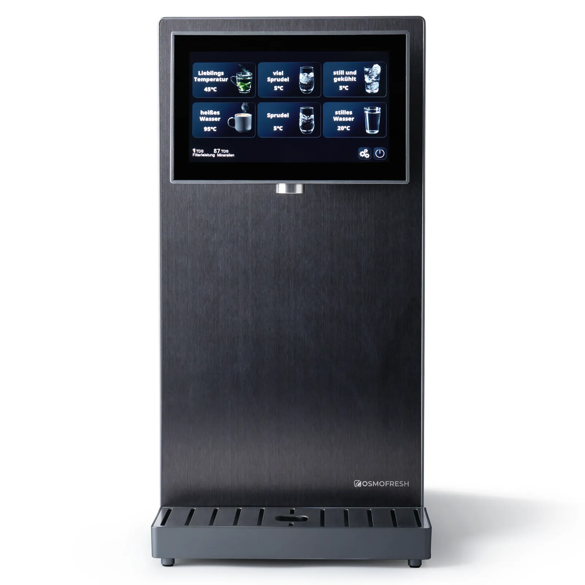

Countertop RO
OsmoFresh Fusion Pro
Auftisch-Osmoseanlage für kaltes, heißes und gesprudeltes Wasser mit Tank- oder Festwasserbetrieb.
1.290 €
Technische Daten
| Preis | 1.290 € (Herstellerseite bei Recherche) |
| Produktnummer | ROFP |
| Einsatz | Haushalt, 1–6 Personen |
| Wasserarten | Still, gekühlt, heiß und zwei Sprudelstärken |
| Temperaturbereich Ausgabe | 4–95 °C |
| Anschluss | Wassertank oder Festwasser, jederzeit umschaltbar |
| Filter | 7-in-1 Quick-Change-Kartusche |
| Filterwechsel | Alle 12 Monate |
| Hygiene | 3-fache UV-C-LED; Microbial Resistance Technology |
| Display | 7 Zoll Touchdisplay mit zwei TDS-Anzeigen |
| Abwasserverhältnis | Tankmodus 4:1; Leitungsmodus 1:2 |
| Maße | 51 × 22 × 43,7 cm (L × B × H) |
| Gewicht | 21,6 kg ohne Wasser |
| Eingangsdruck | 1–5 bar |
| Eingangstemperatur | 5–45 °C |
| Ausgabemengen | 150 ml bis 1,2 l in 100-ml-Schritten |
| Kühlleistung | 120 W |
| Leistungsaufnahme | ca. 2,6 W Standby; bis 2.400 W Betrieb |
| CO₂ | Kleine Kartusche oder große Flasche; CO₂-Flasche nicht enthalten |
| Zertifizierung | TÜV Rheinland ID 1111314292; WQA/NSF/ANSI/CAN 372-2020 |
Datenhinweis
Die Angaben stammen aus öffentlich zugänglichen Hersteller- und Produktunterlagen. Nicht veröffentlichte Werte wurden nicht geschätzt. Änderungen und Modellvarianten sind möglich.